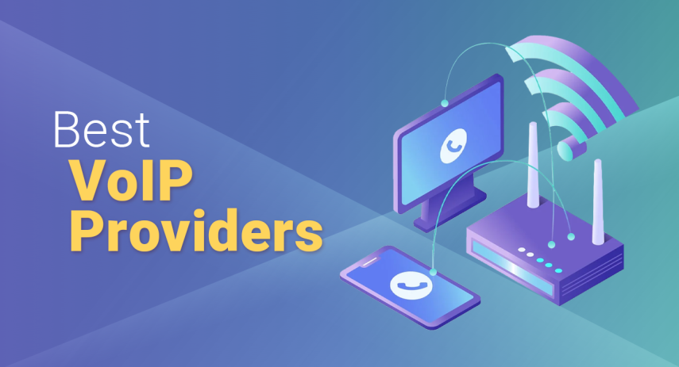

The Best VoIP Providers 2025
Josephine Nguyen | Updated on August 15th 2022Content Manager & Graphic Design Specialist In a hurry? Here’s the top VoIP Provider for 2025:
Let’s face it, a traditional landline is an analog dinosaur in a digital world. The trusty wired phone, once the preferred (and only) form of communication for many, has been superseded by the power of the internet.
VoIP stands for voice over internet protocol and it is now the standard communication method in a growing number of offices and businesses. That’s because it effortlessly overcomes many of the shortcomings and frustrations presented by an old landline service. Issues such as:
- Expensive installation and monthly subscription fees
- Cumbersome scalability due to hardware constraints
- Only usable in the office making it unsuitable for hybrid working
- Lack of features such as metric tracking and call encryption
- Unreliable connections resulting in poor call quality
VoIP has outstripped the functionality of the landline and is now much more suited to a modern working environment. That’s thanks to its ability to work on any standard laptop, superior cost-effectiveness, ease of use, and the host of additional features it brings to the table.
With employers and employees alike having to adapt to a new standard of working within a business climate that’s only set to get more challenging, it’s time to see how a VoIP could boost the efficiency of your business.
An overview of the best VoIP Providers for 2025:
What is a VoIP service? How can it Help Me?
A VoIP allows you to make and receive calls over the internet. Functionally, VoIP still allows you to do everything a traditional landline does, only with a whole host of added versatility and function. As the majority of people now have access to high-speed internet and a computer, implementing VoIP can save you time and money, all while elevating your business into the 21st Century. Here are some of the key advantages of VoIP:
Reduced costs - There are several ways that VoIP can save you money.
Firstly, no additional hardware is required beyond your work computers and a reliable internet connection. That means no copper wire and no PBX installations. Secondly, the monthly cost of a VoIP versus a landline contract is typically cheaper, particularly if you are currently on a metered connection. Finally, many desirable tools such as call queuing, rerouting, etc. which are a financial add-on for most landline contracts come as standard with VoIP.Straightforward scalability - The fact that you don’t need physical phones/landlines has many additional benefits, including scalability. Now there is no need to provide every new employee with a dedicated work phone, their work laptop is all they will ever need.
Suitable for hybrid-working - Working from home (at least part of the work week) is here to stay for many. VoIP allows employees to make calls using the company phone number wherever they are in the world, again without the need for additional logistical and financial investment.
Advanced features - The internet opens the door to a broad range of additional features that are either simply not possible via a standard landline setup or come at a costly premium. All the standard features such as caller ID, call blocking, queuing, recording, etc. are here, as well as some pretty innovative features like notifications sent to your email, automatic voicemail transcription, and file sharing.
Performance tracking - VoIP can provide you with the information necessary to make sure your key performance indicators are being met. Everything from call length to disconnect rate can be tracked. It is also much easier to jump onto another call to listen/offer assistance, should it be required.
Great call quality - This was once a major concern of VoIP. However, advancements in internet speed and quality actually result in a higher call quality than landlines in a lot of cases.
With the major benefits of voice over internet protocol (VoIP) explained, let’s take a look at three of the best providers for 2022:
How we chose the Best VoIP Providers for 2025
The market is teeming with different VoIP solutions, so choosing the best provider can be tricky. In selecting the best vendor for our top 10 list, our team looked into the following factors. No two businesses are alike, however, so your specific needs, goals, and situations will come into play at the end of the day.
- Features
- Network Quality
- Scalability and Flexibility
- Third-party Integrations
- Security
- Pricing and Plans
- Customer Support
VoIP Providers - Frequently Asked Questions (FAQ)
❌ Are there any disadvantages to VoIP?
The main thing to consider is that VoIP requires a good internet connection. The requirements are not exceptionally high as making voice calls requires relatively little bandwidth and the vast majority of residential and commercial spaces have more than adequate internet. This is something to consider though if you know your internet connection is particularly troublesome.
🏬 Is VoIP suitable for a small business?
VoIP is an ideal solution for small and new businesses. At a time when keeping costs low is particularly important, the absence of installation costs and the fact that no additional hardware is required are both huge advantages. Furthermore, the instant scalability of VoIP means that it can grow with your business at any time.
💶 How much does VoIP cost?
Prices start from as little as $10/month. It is important to consider the number of employees who will require access before making a commitment. Some services charge a flat fee for a limited number of users, while others will let you add an unlimited number of additional users for a set monthly fee. There are also VoIP providers that charge on a pay-as-you-go basis. This may be worth considering if you make business calls infrequently but is likely to end up more expensive for larger businesses. The great thing about VoIP service providers is that, unlike traditional phone contracts, many offer a no-commitment monthly subscription.
💯 What do I need in order to use VoIP?
The requirements to start using VoIP are remarkably low. All you need is a laptop/desktop and a broadband connection. As everything is done over the internet there is also no need to invest in powerful/expensive computers to operate it. The likelihood is that you already have everything you need to get started.
Transparency and Trust: The aim of this website is to help you find the perfect software for your needs in an easy-to-view comparison list. You can read more about how we review and about our background in the About Us section of this website. Software.fish does not feature all of the software available in the market, we cherry-pick what we consider to be the leaders in each vertical. We try to keep this site updated and fresh, but cannot guarantee the accuracy of the information as well as the prices featured at all times. All prices quoted on this site are based on USD so there could be slight discrepancies due to currency fluctuations. Although the site is free to use, we do earn commissions from the software companies that we have partnered with. If you click on one of our links and then make a purchase, we will get paid by that company. This has an impact on the ranking, score, and order in which the software is presented in our list and elsewhere throughout the site. Software listings on this page DO NOT imply endorsement.